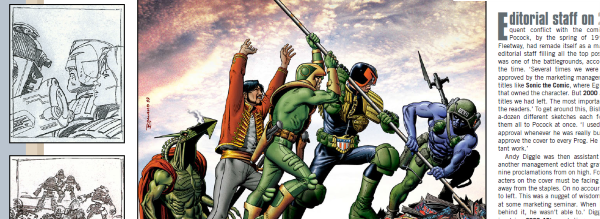

The series that dared to look back at the entire thirty year (then, later, forty year) history of the Galaxy's Greatest Comic, and became a book, and then another book.
Art by Colin Wilson (left), then Brian Bolland
| Article Title | Parts | Pages | w indicates a wraparound coverCovers | Year(s) | Issues | Writer | Artist | Colourist | Letterer |
|---|---|---|---|---|---|---|---|---|---|
| Welcome to Your Future | 1 | 8 | Cliff Robinson and Chris Blythe 1 | 2002 | M4.09 | David Bishop | reprints, prod. images | <-- | n/a |
| Growing Pains | 1 | 8 | 0 | 2002 | M4.10 | David Bishop | reprints, prod. images | <-- | n/a |
| Casualties of War | 1 | 8 | 0 | 2002 | M4.11 | David Bishop | reprints, prod. images | <-- | n/a |
| And Now the Screaming Starts | 1 | 9 | 0 | 2002 | M4.12 | David Bishop | reprints, prod. images | <-- | n/a |
| Gone A.W.O.L. | 1 | 9 | 0 | 2002 | M4.13 | David Bishop | reprints, prod. images | <-- | n/a |
| You Go Girl | 1 | 9 | 0 | 2002 | M4.14 | David Bishop | reprints, prod. images | <-- | n/a |
| Psis Matters | 1 | 9 | 0 | 2002 | M4.15 | David Bishop | reprints, prod. images | <-- | n/a |
| Flying High | 1 | 8 | 0 | 2002 | M4.16 | David Bishop | reprints, prod. images | <-- | n/a |
| What a Carve-Up | 1 | 8 | 0 | 2002 | M4.17 | David Bishop | reprints, prod. images | <-- | n/a |
| Machine Code | 1 | 8 | 0 | 2002 | M4.18 | David Bishop | reprints, prod. images | <-- | n/a |
| Too Hot to Handle | 1 | 9 | 0 | 2002 | M201 | David Bishop | reprints, prod. images | <-- | n/a |
| Extra: The (Real) Mighty One | 1 | 8 | 0 | 2002 | M201 | David Bishop | reprints, prod. images | <-- | n/a |
| The Bigger Picture | 1 | 8 | 0 | 2003 | M202 | David Bishop | reprints, prod. images | <-- | n/a |
| One for the Ladies | 1 | 8 | 0 | 2003 | M203 | David Bishop | reprints, prod. images | <-- | n/a |
| Raising the Standard | 1 | 7 | 0 | 2003 | M204 | David Bishop | reprints, prod. images | <-- | n/a |
| Last Orders? | 1 | 9 | 0 | 2003 | M205 | David Bishop | reprints, prod. images | <-- | n/a |
No supertitle.David Bishop Interview: 1977 and All That | 1 | 2 | 0 | 2006 | p2007 | editorial | reprints | <-- | n/a |
No supertitle.Cannon Fodder: Extract from Thrill-Power Overload | 1 | 4 | 0 | 2006 | p2007 | David Bishop | reprints, prod. images | <-- | n/a |
| 40th Anniversary Update | |||||||||
| Beyond the Third Decade | 1 | 8 | 0 | 2016 | M376 | Karl Stock | reprints | <-- | n/a |
| The Wolf at the Door | 1 | 8 | 0 | 2016 | M377 | Karl Stock | reprints | <-- | n/a |
| Chaos Reigns | 1 | 8 | 0 | 2016 | M378 | Karl Stock | reprints | <-- | n/a |
| Judgement Time | 1 | 8 | 0 | 2016 | M379 | Karl Stock | reprints | <-- | n/a |
| Read All About It | 1 | 8 | 0 | 2017 | M380 | Karl Stock | reprints | <-- | n/a |
| Into the New Frontier | 1 | 8 | 0 | 2017 | M381 | Karl Stock | reprints | <-- | n/a |
| year | episodes | pages |
| 1999 | 0 | 0 |
| 2000 | 0 | 0 |
| 2001 | 0 | 0 |
| 2002 | 12 | 101 |
| 2003 | 4 | 32 |
| 2004 | 0 | 0 |
| 2005 | 0 | 0 |
| 2006 | 2 | 6 |
| 2007 | 0 | 0 |
| 2008 | 0 | 0 |
| 2009 | 0 | 0 |
| 2010 | 0 | 0 |
| 2011 | 0 | 0 |
| 2012 | 0 | 0 |
| 2013 | 0 | 0 |
| 2014 | 0 | 0 |
| 2015 | 0 | 0 |
| 2016 | 4 | 32 |
| 2017 | 2 | 16 |
| 2018 | 0 | 0 |
| 2019 | 0 | 0 |
| 2020 | 0 | 0 |